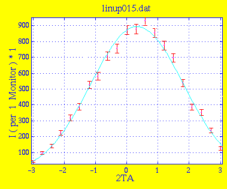
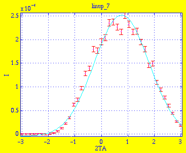
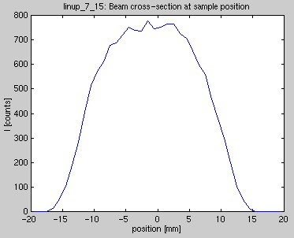
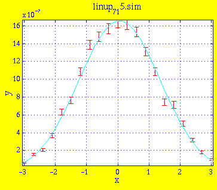
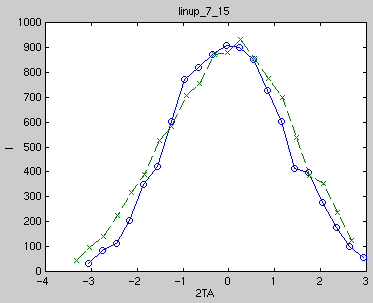

Amplitude 9.2445e+02 1.9872e+01 Centre 3.3164e-01 2.1735e-02 Width 1.4812e+00 4.8780e-02 Background -2.9340e+01 1.9886e+01 * Chi Squared 1.9478
This is the result linup_7.sim of simulation with 5e6 neutrons. Instrument definition linup-4.instr.

Amplitude 2.5639e-06 5.7076e-08 Centre 7.7023e-01 1.7959e-02 Width 1.0362e+00 1.8899e-02 Background -4.4749e-08 1.5836e-08 * Chi Squared 7.6728This graph reveals a problem in the simulation. The curve is strongly non-symetric around 2TA=0 and the intensity completely vanishes for 2TA < -1.5. To investigate this, the simulation was repeated with a linear PSD placed just in front of the vanadium sample in order to measure the beam cross-section at the sample position. The following graph shows the beam intensity as a function of the distance from the center of the sample:

We notice two things on this graph. First, the beam is rather narrow at the sample position, about the same as the sample diameter (20mm). Second, the beam is not centered on the sample, being offset about 1.5mm. This means that part of the sample is not being illuminated by the beam, causing the asymetry in the measured intensity in the detector.The measurements do not suggest that this "beam misses sample" scenario occured during the experiments. Two possible explanations suggests themselves. One is that the effective collimation of C1 was larger than 30', as is also suggested by the previous PHM scan with 30' C1 collimation. This could be caused by non-neglible transmission through collimator blades (which is not taken into account in the simulation), or the 30' value could simply be wrong.
The other possibility, which we investigate here, is that the beam was actually better centered on the sample in the experiment. The previous simulation was thus repeated, this time with 2e6 neutrons and the sample offset 1.5mm perpendicular to the beam. This is the result linup_7_15.sim:

Amplitude 1.6992e-06 3.4562e-08 Centre 5.9956e-02 1.9113e-02 Width 1.3078e+00 3.8744e-02 Background -4.5606e-08 2.4305e-08 * Chi Squared 2.5814As can be seen, the previous asymetry has disappeared, and can thus be completely attributed to the misalignment of the sample in the beam.

The simulated data is somewhat narrower than the measured. This could be due to a too-narow beam at the sample position during simulations caused by an effective C1 collimation larger than 30' during the experiment. This needs further investigation.